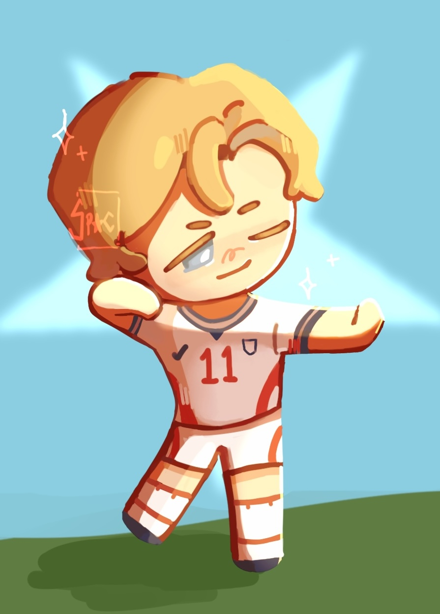

I Like Anthony Gordon
September 29, 2026 by Anaya Donaldson

My current favourite white guy would have to be Anthony Gordon from hit football club Barcelona, or the England National Team. It's really a shame he's in Barcelona since I'm not a big fan of the rest of the team. But then again, I like the Real Madrid members and watching them play does not bring me joy either. I do enjoy watching the England National team though so the international break has been very enjoyable.
Anyways, back to Anthony Gordon. Love that guy. Why? I honestly have no idea. When I was watching the world cup, I just kept noticing him on the left, running like his life depended on it and I would go "Woah this guy is sick" and then I'd go on the internet and see hardly anyone talking about him. And then he scored the only goal against Argentina and Tuchel subbed him off. WHY? I hope being in Barcelona brings him even more fame, there is no fanart of him and I had to draw the one on the right.